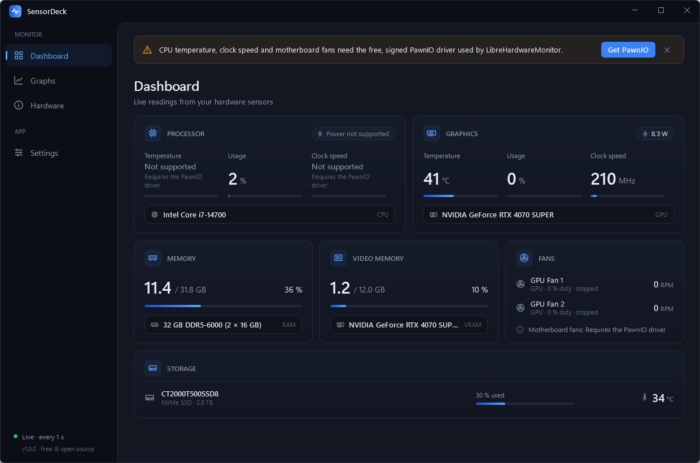

See what your PC is really doing.
Live temperatures, usage and clock speeds for your CPU, GPU, memory, fans and drives, read straight from your hardware sensors. Lightweight, private and completely free.
SensorDeck is a Windows app. Open this page on a Windows PC to download it.

Dashboard: every reading is labelled with the exact hardware it comes from.
Features
Everything you want to know about your hardware. Nothing you don't.
Live dashboard
CPU and GPU temperature, usage, clock speed and power, plus RAM, VRAM, fans and drive temperatures, all on one screen.
Performance graphs
Smooth live graphs over 1, 5 or 10 minutes with min, average and max, so you can spot spikes while gaming or working.
Your exact hardware
Detects your real components automatically, like your CPU and GPU models, RAM type and speed, and drive capacity, and shows them under every reading.
Honest readings
Every number comes from a real sensor. If your hardware doesn't report something, SensorDeck says so and tells you why. No fake zeros.
Fits how you work
°C or °F, custom warning colours, always on top, minimise to the system tray with live temps in the tooltip, and start with Windows.
Private & free forever
No ads, no accounts, no telemetry. It never connects to the internet. Open source under the MIT licence.
Real data only
If it's on screen, it came from a sensor.
Many monitors quietly show 0 or a guess when a reading isn't available. SensorDeck shows you exactly what your hardware reports, and explains anything it can't read.
Install
Up and running in under a minute
Download
Click Download for Windows. The installer is about 48 MB.
Open the file
Open SensorDeck-setup.exe from your downloads. If Windows says it "protected your PC", choose More info then Run anyway.
Install & allow
Click Install. SensorDeck asks for administrator permission when it starts, because reading hardware sensors requires it.
Want CPU temperatures? CPU temperature, CPU clock speed and motherboard fan readings use the free, signed PawnIO driver. SensorDeck shows a reminder with a link if it isn't installed. Everything else works without it.
FAQ
Questions
Is SensorDeck really free?
Yes. No trial, no premium version, no ads. It's open source under the MIT licence, and anyone can read the code on GitHub.
Why does Windows warn me when I open it?
SensorDeck isn't code-signed yet (signing certificates cost money), so Windows SmartScreen shows "Windows protected your PC" for new apps. Click More info → Run anyway. If you want to double-check the file, compare it against the checksums on the release page.
Why does it need administrator permission?
Windows only lets programs read low-level hardware sensors, like CPU and drive temperatures, with administrator rights. Every hardware monitor works this way.
Why does my CPU temperature say "Not supported"?
CPU temperature, CPU clock speed and motherboard fans are read through the free PawnIO driver. Install it from pawnio.eu and restart SensorDeck. Some laptops and pre-built PCs don't expose certain sensors at all; SensorDeck will tell you when that's the case.
Does it collect or send any data?
No. SensorDeck never connects to the internet. Your settings are saved in a small file on your PC, and that's it. This website doesn't use cookies or trackers either.
How do I uninstall it?
Open Windows Settings → Apps, find SensorDeck and click Uninstall. For the portable version, just delete its folder.